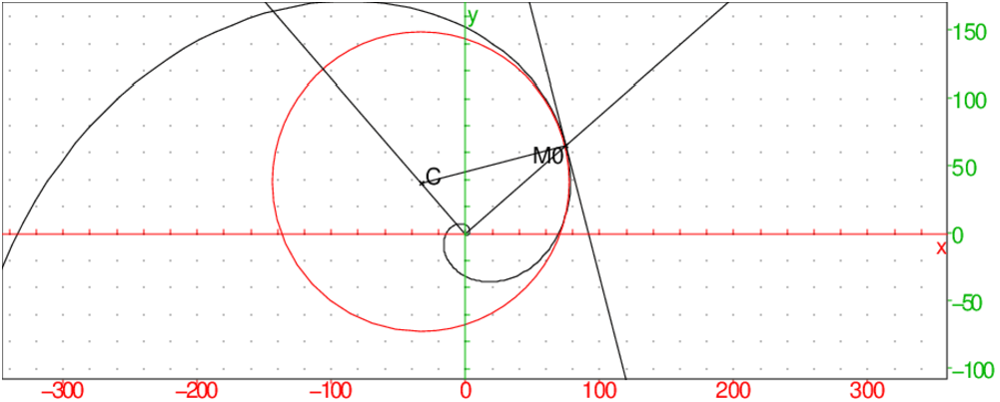

Trouver la courbure et le centre de courbure de la spirale logarithmique :
ρ=3eθ/2 en un point M de coordonnées :
ρcos(θ),ρsin(θ) et
en un point M0 de coordonnées :
3e7/2cos(7),3e7/2sin(7).
On tape :
trigcos(courbure([3*exp(t/2)*cos(t),3*exp(t/2)*sin(t)],t))
On obtient le rayon de courbure au point M d’affixe
3*exp(1/2)*(cos(1)+i*sin(1)):
2*sqrt(5)/(15*exp(t/2))
On tape pour avoir le rayon de courbure au point M0 d’affixe
3*exp(7/2)*(cos(7)+i*sin(7)):
trigcos(courbure([3*exp(t/2)*cos(t),3*exp(t/2)*sin(t)],t,7))
On obtient :
2*sqrt(5)/(15*exp(7/2))
Pour avoir l’équation du cercle osculateur en M, on tape :
trigcos(equation(cercle_osculateur([3*exp(t/2)*cos(t),3*exp(t/2)*sin(t)],t)))
On obtient :
x^2+y^2+9*exp(t/2)^2/4+3*x*exp(t/2)*sin(t)-3*y*exp(t/2)*cos(t)=(45*exp(t/2)^2/4)
Pour avoir l’équation du cercle osculateur en M0, on tape :
trigcos(equation(cercle_osculateur([3*exp(t/2)*cos(t),3*exp(t/2)*sin(t)],t,7)))
On obtient :
x^2+y^2+9*exp(7/2)^2/4+3*x*exp(7/2)*sin(7)-3*y*exp(7/2)*cos(7)=(45*exp(7/2)^2/4)
Pour avoir l’affixe du centre du cercle osculateur en M, on tape :
affixe(centre(cercle_osculateur([3*exp(t/2)*cos(t),3*exp(t/2)*sin(t)],t)))
On obtient :
(3*i)*exp(t/2)*cos(t)/2-3*exp(t/2)*sin(t)/2)
Pour avoir l’affixe du centre du cercle osculateur en M0, on tape :
affixe(centre(cercle_osculateur([3*exp(t/2)*cos(t),3*exp(t/2)*sin(t)],t,7)))
On obtient :
(3*i)*exp(7/2)*cos(7)/2-3*exp(7/2)*sin(7)/2
On tape :
plotparam(3*exp(t/2)*(cos(t)+i*sin(t)));
M0:=point(3*exp(7/2)*(cos(7)+i*sin(7)));
C:=centre(cercle_osculateur([3*exp(t/2)*cos(t),3*exp(t/2)*sin(t)],t,7));
cercle_osculateur([3*exp(t/2)*cos(t),3*exp(t/2)*sin(t)],t,7,affichage=1)
segment(C,M0)
tangente(plotparam(3*exp(t/2)*exp(i*t),t),7);
demi_droite(0,M0);
demi_droite(0,C);
On obtient :
